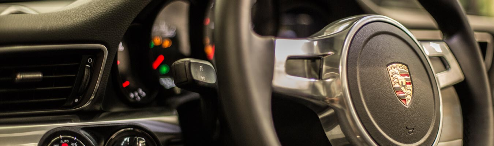

-

great quality
-

reasonable prices
-

uniqueness
In manufacturing, a measure of excellence or a state of being free from defects, deficiencies and significant variations. It is brought about by strict and consistent commitment to certain standards that achieve uniformity of a product in order to satisfy specific customer or user requirements.
Commercial decision reached jointly between a buyer and seller, reflecting a judgment influenced by the economic realities of the marketplace and the relative bargaining powers of the parties. Generally, it is high enough to cover the seller's costs, but not high enough for the seller to realize monopolistic profit.
Real or perceived benefit of a good or service that differentiates it from the competing brands and gives its buyer a logical reason to prefer it over other brands. USP is often a critical component of a promotional theme around which an advertising campaign is built.
Car tuning is modification of the performance or appearance of a vehicle. For actual "tuning" in the sense of automobiles or vehicles. Most vehicles leave the factory set up for an average driver's expectations and conditions. Tuning, on the other hand, has become a way to personalize the characteristics of a vehicle to the owner's preference. Cars may be altered to provide better fuel economy, produce more power, or to provide better handling. Car tuning is related to auto racing, although most performance cars never compete. Tuned cars are built for the pleasure of owning and driving. Exterior modifications include changing the aerodynamic characteristics of the vehicle via side skirts, front and rear bumpers, spoilers, splitters, air vents and light weight wheels.